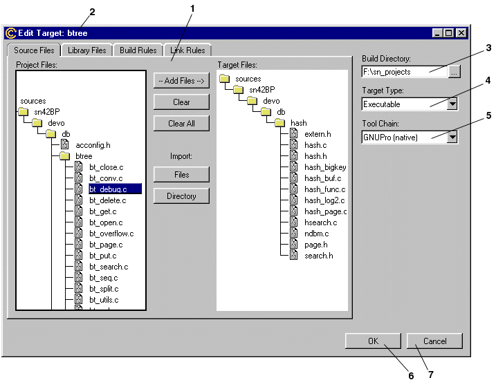

Initially this document will only cover the creation and execution of the build process, but eventually it is hoped to expand this document to cover the whole IDE part of Source Navigator.
Identified components of an IDE include:
1) Creating the build procedure of the application being developed.
2) Edit and amend source code.
3) Execute the build procedure.
4) Launch application and debugger.
5) Misc. (revision control, installation, build optimization, profiling,
analysis, testing, etc.)
The rest of this paper will be about the functional specification for
sections 1 and 3, creating the build procedure and the execution of the
build procedure.
Notes:
Menu item "Build Targets..." is very misleading. This will be
revised, possible candidates include: "Build Target Manager" "Make Target
Manager", "Build Manager".... [See the Terminology Section below.]
2) New: this button will create and add an empty entry to the target list and select it, ready for the user to type in a name (item in 7) and press the set button (item 8).
3) Duplicate: this button is used to duplicate the selected build target. This will generate a unique name and insert it into the Target list. This new entry will be selected ready for the user to give it a new name.
4) Edit: this button will bring up an "Edit Target" dialog with the fields initialized with the information stored about the selected target. If no targets have been selected from the target list then this button will be disabled.
5) Delete: pressing this button will delete the selected target. If no targets have been selected then this button will be disabled.
6) Done: this button dismisses the Target Manager dialog, removing it from view.
7) Selected Target entry box: Any target selected in the Target list will be displayed in this text entry box. If this text entry box is empty then the Set button (item 8) is disabled.
8) Set button: this button is disabled until something is entered into the text entry box (item 7). If a target is selected in the Target list and this button is pressed then the selected target will be renamed to the contents of the text entry box. If no target is selected and the button is press a new target is created.
- Source files ( C, C++, Java, and other files for
compilation)
- Libraries (to be linked to compiled source code)
- Rules (how to compile/translate the source files)
- Sub Targets (other build targets which
may need to be built, e.g. a library)
There will also be other information required for building a target, such as:
- build directory (where to store intermediate and
final files, e.g. object files, libraries, executables)
- target type (Executable, Library, DLL, shared
libraries, Other)
- tool chain (the development tool suit needed,
e.g. GNUPro98r1, MSVC++)

1) The tab notebook allows the user to control Source Files, Library Files, Build Rules and linker rules. more on these below. By default this will always start with the Source Files tab on top with no data in any fields.
2) Title Bar: This contains the Target Name so the user can tell which target they are editing.
3) Build Directory: This is the directory where all files generated in the build process will initially be stored. The directory name can be entered at the keyboard, pasted in from some other source or the "..." button can be used in the standard way to bring up a standard select directory directory dialog which can be used to select a directory. By default this will be blank.
4) Target Type: This drop down combobox is used to select the build target type: Executable, Library, DLL, Share libraries, Other. The user clicking any where on the combobox will make the list "drop down". The user can not entry and data in this widget, only select and existing type. Default will be Executable.
5) Tool Chain: Another combobox allowing the user to select the development tool chain in the same manner as selecting the target type. The default will be GNUPro which ever is that latest version available, other options may include old versions of GNUPro and other tools chain like MSVC++, etc.
6) OK button: This button once clicked will store all the information, the user has entered, in a database and remove the dialog from view.
7) Cancel button: Once clicked this button will remove the dialog from
view without committing any of the information to the database.

2) right file tree widget: This is a file tree widget containing only the files in the current build target. The user can select items in this file tree widget in the same manner as the left file tree widget. Selecting items in this will enable the remove files arrow (see item 4).
3) add files button: This button will add files to the current build target. This button is disabled until an item is selected in the left file tree widget. Once this button has been pressed, items selected will be added to the right file tree widget.
4) clear files button: This button will remove files from the current build target source base. This button will be disabled until an item is selected in the right file tree widget.
5) Import Source: Files: This button is used to bring up an OS standard file selection dialog, which the user can select file(s) which are not currently in the project database.
6) Import Source: Directory: This button is used to bring up an OS standard
directory selection dialog, allowing the user to add directories (and the
source files in them), which are currently not in the project database,
to the build target source base.
2) Remove Library button: clicking on this button will remove a library which has been selected in the library listbox. This button will be disabled if nothing is selected in the library.
3) Library file listbox: This lists all the libraries which have been included for linking with the current build target. The user can select one of more libraries with a method which is consistent with their OS. Once one or more libraries have been selected in this listbox the "Remove Library" button will be enabled.
Notes:
[TODO: Add a disable/enable library button so the user can disable
selected libraries.]
This tab will look similar to the Library Files Tab, but with the option to include build targets which have already be created in the project, or build targets which exist in other projects (for example: the user might have a project to build a library that they want to include in there current build target in a different project, they can either include a pre built library or include the build target so that building the current build target will build and update the target in the other project.
1) Included build target list box:
2) Add build target:
3) Import build target:
4) Remove build target:

Rules list box, contains a list of all rules for this target.
A selected rule is denoted by the standard OS highlighter.
1) The Status column of the rules list box: This column show if a build
rule is disabled or enabled. (See items 4 & 5)
2) The File Type column of the rules list box: This column displays the type of file which the rule will act upon.
3) The Description column of the rules list box: This is a brief description of the rule. The extension of the file(s) this rule can be applied to is in the square braises (e.g. "[.c]").
4) Enabled rule indicator: This little blue tick indicates that the rule is enabled for this target.
5) Disabled rule indicator: This little red cross indicates that the rule is disabled for this target.
6) Command Line for selected rule: This disabled text box (i.e. the user can't enter anything into this box) displays the expanded command line arguments for the selected rule. If no rule is selected then this text box will be empty.
7) Disable/enable button: This button allows the user to disable or enable rules. If nothing is selected then this button is disabled. If an enabled rule is selected (as in the screen shot), then the button is active and will read "Disable", pressing the button will cause the rule's Status to turn to disabled (i.e. the little blue tick turns into a little red cross) and the button will read "Enable" (since the same rule is selected). If a disabled rule is selected then the button will be active and the button label will read "Enable", pressing the button will change the Status of the selected rule to enabled (a little blue tick) and the button label will turn to "Disable".
8) Delete: The button is only enabled when a rule is selected in the rule list. Pressing this button will delete the selected rule.
9) Edit Rule: This button is only enabled when a rule is selected in the rule list. Pressing this button will bring up a dialog window specific to the the rule selected. (more of the rule specific dialogs later).
10) Duplicate: This button will copy a selected rule and add it to the rule list box. This button will be disabled if a rule has not been selected.
11) New Rule: This button is always enabled. Pressing it will result
is a User Defined Rule dialog being displayed.
2) Debug combobox: This drop down comobox allows the user to select a debug setting. The deault for this combobox will the default compiler setting.
3) Optimization: Same as item 2, but from Optimization.
4) Code Generation: Same as item 2, but for Code Generation.
5) Compiler Location: This allows the user to give a absolute location for the compile binary. The user can either type in the location (or compiler name if the compiler is in the PATH variable) or click on the button to the right of the entry widget and use a standard OS file selection dialog to select the binary they wish to use.
6) Warning level: Same as item 2, but for warning levels.
7) User flags: This entry widget lets the user type in sets of flags which are not covered in the comboxes.
8) Command Line args: This text widget displays the command line which
will be used for this rule. When the
user changes some of the settings (i.e. Warning level, debug, optimization,
etc), this text box will reflect the
changes by adding or removing flags. This text widget is not editable.
9) OK button: This button will commit the changes (if any) to the Rules settings, these settings will now be used if this rule is evoked in a build. This dialog will vanish after the OK button has been pressed.
10) Cancel button: Pressing this but will cause the dialog to vanish without saving any changes which the user has made.
1) Auto Generated Paths list: This is a list of paths which is generated from the SN includes database. If the file to be included is listed in the project then the path can be retrieved from the database. Clicking on any of these paths will select it, which is indicated by the blue selection bar.
2) Selected path: this path has been selected. This will cause the Delete button (see item 6) to become active. A path maybe selected from either the Auto Generated Paths list or the User Specified Paths list, but not both at once or more the one path at a time.
3) User Specified Paths list: This is a list of path(s) which the user has selected to be used inconjuction with the auto generated paths. Clicking on any of the paths in this list will cause it to be selected (and unselecting any path which previously had be selected).
4) Add button: Pressing this button will bring up an OS standard directory selection dialog box which the user can use to select a path they wish to add the the User Specified Paths list.
5) Generate: Clicking on this button will generate a list of include
paths from the database and enter them into the
Auto Generated Paths list.
6) Delete: This button is disabled if a path (from either the user or auto generate lists) has not be selected. Once this button is active pressing it will remove the path currently selected path.
2) Defines list: This is a list of all the macro definition which the user has enter so far. Clicking on one will select it.
3) Text entry box: This is a text entry box for edit or entering in new defines.
4) Set button: If the text entry box (item 3) is empty this button will be disabled. If the text entry box isn't empty and a define is selected, then pressing then pressing this button will change the selected define to the contents of the text entry box. If the text entry box isn't empty and a define isn't selected, the pressing the Set button will create a new define in the listbox (item 2) using the contents of the text entry box.
5) Delete button: This button is disabled until something is selected in the defines listbox. Once this button is active, if it is pressed it will delete the currently selected define.
6) New button: This button is always active. Pressing this button will create a new blank entry in the define list. This define will be selected ready of the user to enter the define into the text entry box and the press the set button.
1) Rule description:
2) Extension of input file:
3) Extension of output file:
4) Action list box: A list of commands that should be successfully executed
in order to produce the output file. The user can enter a new step
by clicking on a empty slot in the list.
2) Directory combobox:
3) The Build text output window: The output from the build (compiler info, warnings, error, etc.) is directed into this window in real time. This user can double click on an error, the editor will then load the file (if it hasn't already), jump to the line which contains the error and highlight it (with the text selection highlighter).
4) Highlighted error: This is an error which the user has clicked on.
5) Start button: Clicking on this button will start the build process for the currently selected target. Once the build process has been start this button will become disabled. After the build process is finished (or has been Canceled) the button will be re-enabled again.
6) Cancel button: This button will remain disabled until the build process has been started (by clicking on Start). Once the Cancel button is enabled the user can click on it to stop the build at any time. Once the build process is finished or Canceled the Cancel button is disabled again.
7) Editor: This is the standard editor, no modifications have been made.
8) Error line: This line has been highlighted because the user has double clicked on an error. If the user was to click any where on the editor text widget the highlighter would vanish.
Note: errors in the Makefile should be reported to the user at build time in the same way compiler errors are reported.
[TODO: remove the Directory entry box and move buttons (start, cancel) and the target combobox selector all to the same row.]
[TODO: Devise a conversion for the terminology which understandable and unambiguous while avoiding long menu and button names which will detract from the usability of the GUI.]
- GUI NIT: not too good to have OK/Cancel buttons along the bottom of a dialog.
- TODO: The build window needs more work.
- TODO: Add "export target as Makefile" option some where.
- Devise "Simple Setting" functionality/requirements to allow the user
to switch between tool chains without having to enter boiler plate compiler/translation/linker
flags/settings. (i.e.: specific settings for debug, release and optimization
which have know equivalents across many tool chains).
Please give feedback and feel free to write additions for this document.
(Including fixing my grammar/spelling.)
This document (Version 1.2) was produced using Netscape Composer, screen shot done with Adobe PhotoShop taken from Tcl/Tk produced mockup/proto-type (this version of tcl/tk includes a windows look and feel patch).